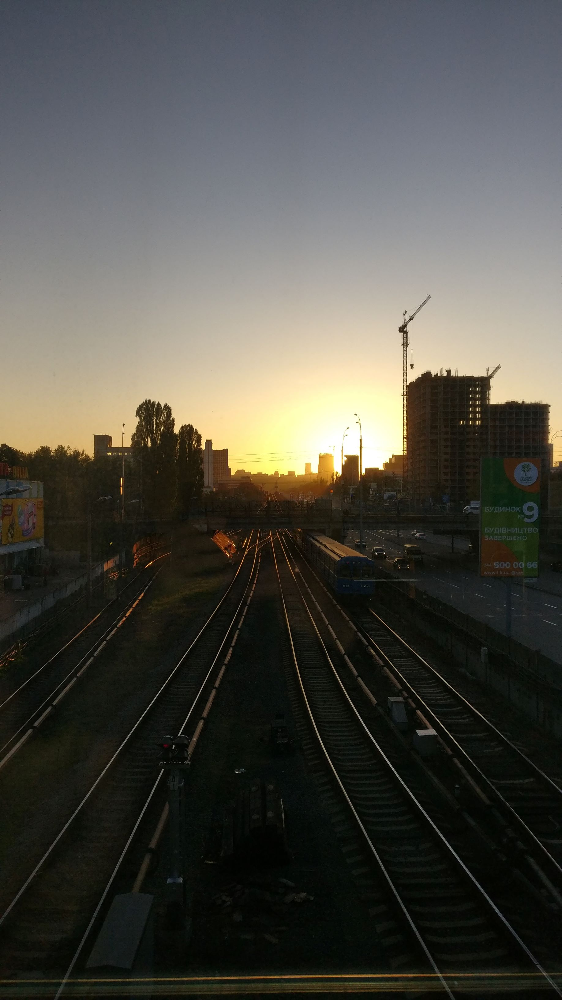

It has a long history starting from the Kyivan Rus, which is known for its democratic values, diplomacy and a woman in power.
There are a lot of places recommended to visit such as:
It is gorgeous both in the daytime and in the night.



I hope Kyiv will soon be as peaceful and safe as it was before.